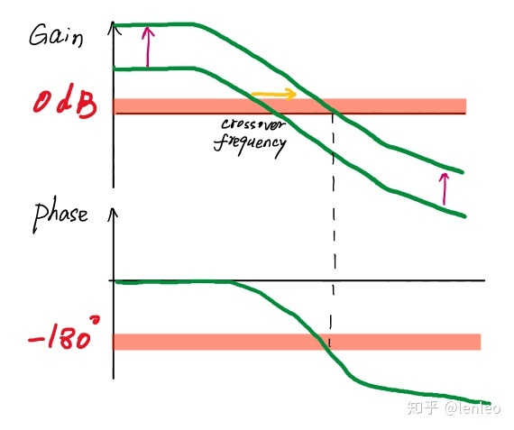

现代控制理论是控制理论研究人员在20世纪中期所提出的一批关于控制理论问题的成果的总称。在控制理论中具有承上启下的作用-承接经典控制理论，启发后续真*现代控制理论，例如模糊控制/鲁棒控制理论。
本文内容为现代控制理论课程的回顾和总结，第一部分为绪论和控制系统建模。
大约一年后2021.3.3来更新了，这门本研互选的课最终没能在本科阶段上完，所以研一下学期我又来“重修”了哈哈哈哈
绪论
现代控制理论的特点和优势
相比经典控制理论，即自动控制理论课程中所学的基于传递函数、零极点与特征根等的控制理论方法，现代控制理论具有以下特点和优势：
- 数学模型方面：现代控制理论是一种使用内部描述模型的内部空间法。
- 适用于多输入多输出系统，可以解决初值非零问题。
- 结构特性方面：解决了是系统可控性和不确定性问题。
- 设计方法方面：可以得到定量的，最优的控制解。
通过目前几节课的学习（截止5-2共学习了8节课程），现代控制理论确实让我感觉相比原有经典控制理论更加科学，这种感觉来源于现代控制理论相比自控，系统的细节更为丰富（内部），能够处理MIMO，优化有据可循，而不是试凑（吐槽自控进行系统设计的方法，基本上就是试凑，瞎碰上成就用，不成就重新加个模块调个系数，令人头大）。
当然，自控在处理一些简单问题时足够使用，能够简化问题
现代控制理论的代表人物：庞德里亚金 别尔曼 卡尔曼
现代控制理论的几个模块
- 线性多变量理论： 能控性/能观测性，系统的极点配置，状态观测器设计和抗干扰问题（本书重点）
- 最优控制理论： 已知数学模型，寻找最优控制函数
- 最优估计理论： 已知数学模型，从被噪声干扰的观测数据中确定系统状态（卡尔曼滤波）
- 系统辨识和参数估计： 基于输入输出数据辨识系统参数
自控里幅值裕度和相角裕度在说什么

上面的bode图描述的是开环系统随着输入频率变化，传递函数赋值和相角的变化，即开环频率响应。
幅值裕度是相角为-180度的时候，赋值距离0db的大小，比0db低为正赋值裕度；相角裕度是当赋值裕度为0db的时候，相角高于-180度的大小，比-180度大则为正相角裕度。
谈论裕度时，我们必须以闭环系统为讨论基础，一个闭环的单位负反馈系统，输出会乘以-1加入到输入端。考虑一个输入的正弦信号（所有的信号都可以通过傅里叶分解变成正弦信号的集合），对于相角为-180度之前的输出信号，反馈会起到降低输入信号的副作用，而-180度的时候，反馈信号会变成对输入信号的增益（乘以-1负负得正），导致系统变成正反馈，容易产生发散，因此-180度是一个判断系统稳定性的关键性节点。
为了让系统稳定，我们应该尽量保证：
- -180度时幅值增益越小越好，即db值为负的越厉害越好（即正幅值裕度）
- 0db对应的相角应该离-180度越远越好，保证到-180度的时候，增益已经衰减了微不足道的大小，即便是正反馈也掀不起什么波浪（正相角裕度）
用一个比喻来说，如果将-180度这个角度认为是做坏事，0度对应做好事，那么上述两条变成
- 不得不做坏事的时候，要做一个能力差（幅值增益小）的坏人
- 能力还没有变弱（0db以上）的时候，要做一个远离恶的好人（离-180度远点）
你可能也会疑惑，只看-180度是不是太粗糙了，相角是别的角度的时候也可能产生正的增益。这种思考完全是有道理的，下面这句话对我有所启发
使用增益和相位裕量是因为它们简单，而不是因为它们是稳定性的理想度量。
总的来说，自控里用裕度判断稳定性还是为了简化难度，因为-180度时的正反馈作用最强，如果能保证此时的反馈不至于让系统发散，则对于系统的稳定性就有了一个比较放心的判断。
更加准确判断稳定性的方法，也请看后续现代控制理论的方法！
如何判断我的系统是否接近0 dB，-180度？
有两个迹象：
- 闭环幅度响应中的幅度较大，以及
- 开环频率响应接近0 dB，-180度
很容易看到较大的闭环幅度响应。大响应是任何大于6dB的值。
相角裕度至少要有30度，才有可能稳定。
控制系统的数学模型
状态空间表达式
相关概念
- 状态：能够表征系统的物理量
- 状态变量/向量：确定系统状态所需的最小一组变量，这些变量构成一个向量，具体形式没有要求
- 状态空间：以选定的状态变量为坐标轴，生成的正交空间（状态向量所在的线性空间）
状态空间表达式是一个方程组，简单来说包含两部分
- 状态方程，描述状态变量导数与状态变量和输入的关系
- 输出方程，描述输出量与状态变量和输入的关系
一个例子如下：
这就是一个状态方程（组），$i(t)$和$u_c(t)$就是两个状态变量，等式的左边是状态变量的导数，最右侧是输入量$u(t)$
现在如果我们选取$u_c(t)$同时作为该系统的输出变量，那么就可以写出输出方程：
毫无疑问，系统的状态变量也可以是输出量，反之亦然
状态空间表达式的几个特点
*形式不唯一，可以随状态变量选取而任意改变*
状态方程
- 状态方程是一阶微分方程（组）；
- 状态方程是状态空间分析法的基本数学方程；
- 状态方程具有非唯一性；
- 状态方程中不含有输入变量的导数
输出方程
- 输出方程是代数方程（组）；
- 输出方程是状态空间分析法的基本数学方程；
- 输出方程具有非唯一性；
抽象化形式
$A$系数矩阵 $B$输入矩阵 $C$输出矩阵 $D$前馈矩阵
状态变量图
一种类似于传递函数系统分析时所画的图，绘制时有一些原则和思路。 状态变量图只有加法器，比例器和积分器。绘制时，先针对每一个一阶微分方程单独画（以积分器为基础），然后再依次连接这些模块。
建模思路
- 确定正方向
- 寻找可观测量与特征量
- 利用物理规律写出方程
- 确定输入、输出与状态变量
没办法也不应该以微分器作为状态图中的一部分
列出状态空间表达式
难点主要在于等式右侧有输入变量的导数项时，需要在状态变量里增加输入项。第一次看书上一个三阶方程的处理方法时，我对设置3个状态变量没有异议，但对于为什么要加一个额外的中间变量$x_4 = \dot x_3 - \beta_3 u$不理解，感觉多引入了一个待定系数。
实际试了一下，如果只用$\beta_0 \beta_1 \beta_2$三个待定系数，将状态变量x代替y的导数回代，会得到四个方程（分别与输入项的系数相等），使得问题变成超正定（未知数少于方程），有可能无解。因此有必要多设置一个待定系数，保证可以求出唯一解。
除了待定系数法，还可以利用拉普拉斯变换将问题转化到频域，然后利用中间变量Z(s)将输入输出分离来求解状态空间表达式。
传递函数矩阵
对状态空间表达式的一般形式做拉普拉斯变换，然后通过消去$X(s)$得到传递函数
- 无零极点对消时：A的特征值=传递函数的极点
- 有零极点对消时：
A的特征值=传递函数的极点+对消的极点
$G(s)$是一个矩阵的时候，$G_{ij}$代表第$i$个输出值对第$j$个输入值的传递函数
正则的有理传递函数：$s->\infin$若传递函数（矩阵内元素）是有限常量，则称为传递函数正则。非正则的传递函数不可以应用，因为那样会放大高频噪声
离散系统的数学描述
离散系统也可以写出状态空间表达式，状态空间表达式里包含的不再是微分方程而是差分方程。
我们可以用差分和微分的近似关系来分析一下G和A的关系
可以看到$G=I+AT,H=bT$，在T比较小的时候G可以近似为单位矩阵
线性变换
选取不同的状态变量，能够获得不同的系数矩阵、输出矩阵等，线性变换的目的是将形形色色的矩阵统一成标准的、方便后续计算的矩阵-标准型矩阵。
线性变换：
- 不改变系统的特征值
- 不改变系统的传递矩阵
几种较好的标准型矩阵
对角型
使用特征向量矩阵S
约当型
A存在重复的特征值，并且特征向量的数量小于n时，不能进行对角化，只能化为约当型矩阵$J$
约当型矩阵的对角线是特征值，上三角阵
模态矩阵
特征值为共轭复数的时候，矩阵可以变为模态阵
若特征值$\lambda _1 = \sigma +j \omega, \quad \lambda _2 = \sigma -j \omega$
模态阵的形式为：
组合系统
涉及到两个系统的串联，并联，以及一个作为另一个的反馈
- 串联时系统1的输出为系统2的输入
- 并联时输入相同，输出等于两者各自输出之和
- 反馈时需要避免代数环的出现，两个系统中不能都有输出矩阵，否则无法求出结果